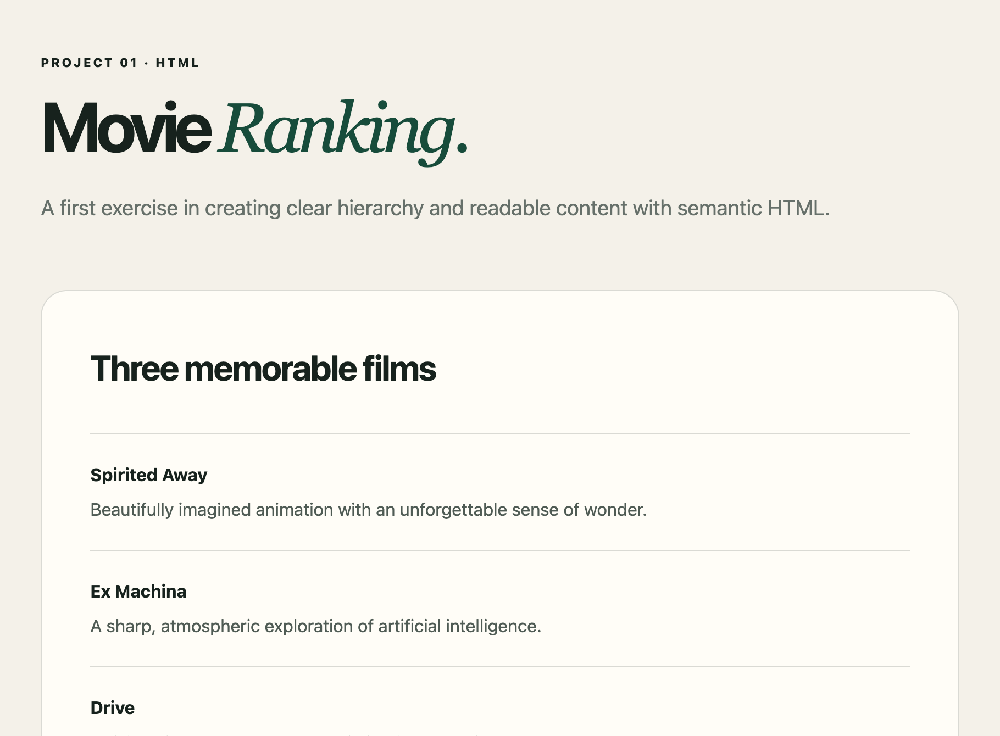
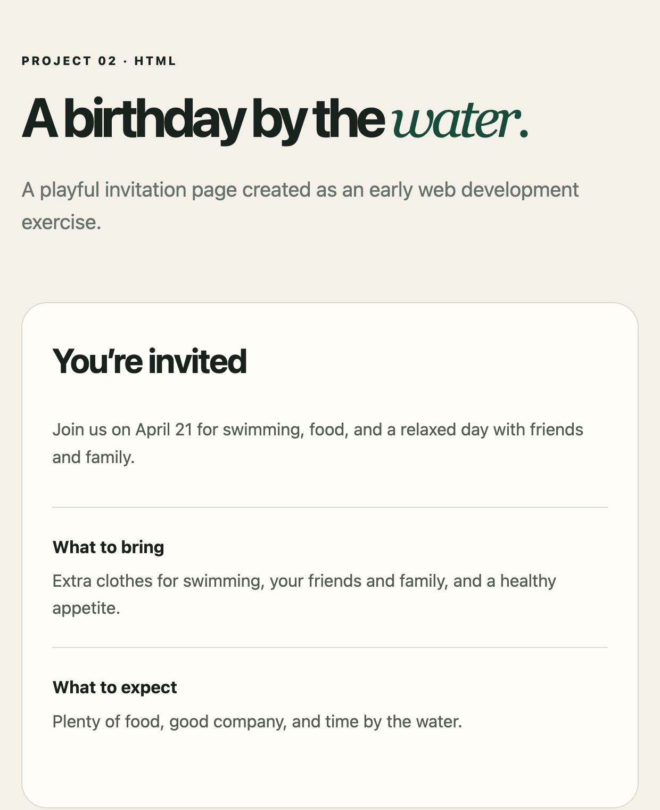

IT Leadership
Strategy, operations, vendor relationships, and technology roadmaps aligned with organizational goals.
Based in Majuro, Marshall Islands
I’m John, an IT leader and web developer focused on resilient infrastructure, information security, and clear digital experiences.
Selected work
Small projects that mark the start of my front-end development journey.

A concise editorial list built with semantic HTML.

A cheerful event page with practical details and directions.
These projects are from “The Complete Full-Stack Web Development Bootcamp” on Udemy, created by its instructor.
What I do
I turn technical complexity into systems that people can trust and use.
Strategy, operations, vendor relationships, and technology roadmaps aligned with organizational goals.
Practical governance, awareness, risk assessment, and controls that strengthen everyday operations.
Modern workplace platforms and accessible web experiences designed around real user needs.